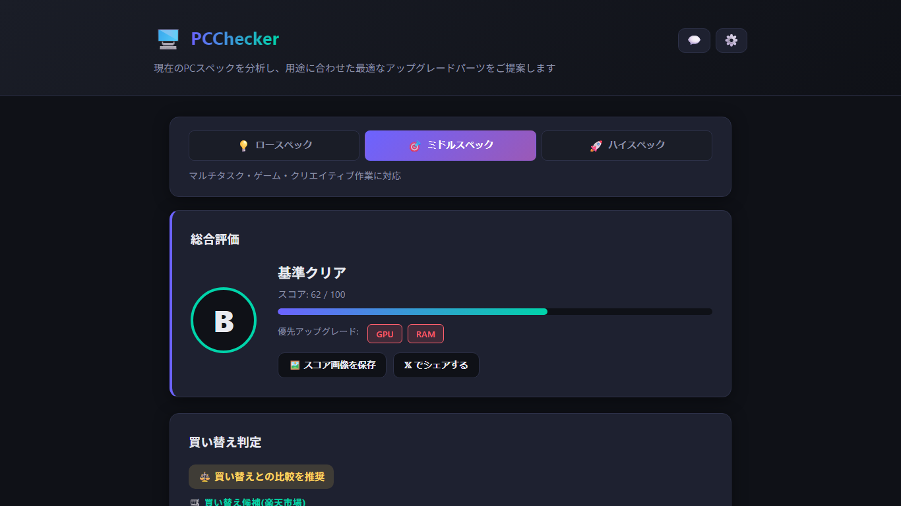
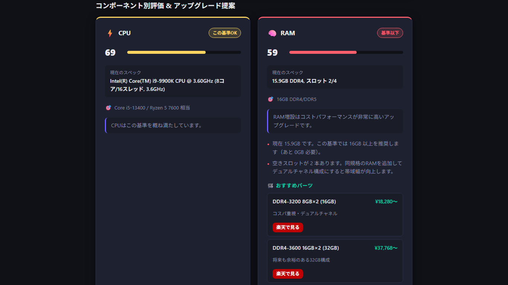
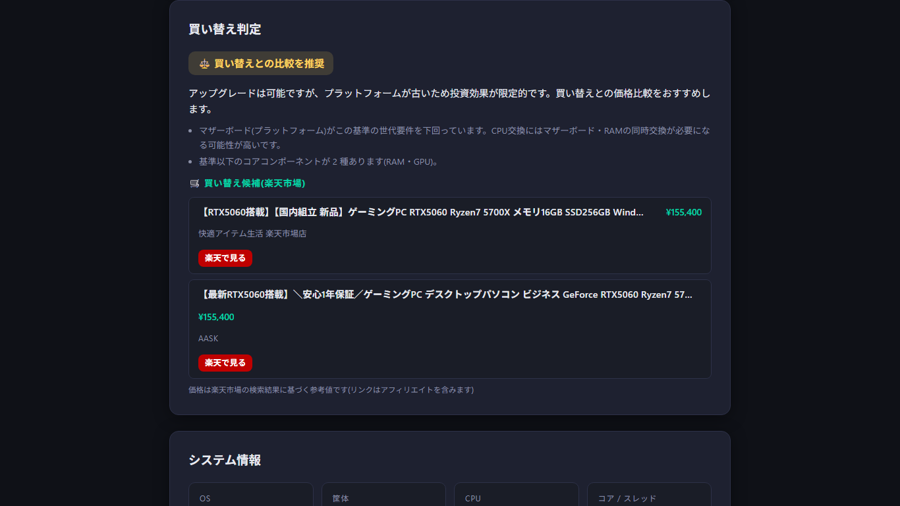

PC構成を自動診断
CPU、メモリ、GPU、ストレージ、OS、ディスプレイ、ネットワーク、マザーボードを確認します。
Windows PC 無料スペック診断
あなたのPC、まだ戦えますか？ 無料で即診断。
CPU、GPU、メモリ、ストレージなどの構成を自動で確認し、アップグレードすべきか、買い替えを考えるべきかを日本語でわかりやすく表示します。
PCスペックを、判断できる言葉へ
PCCheckerは、スペック確認だけで終わらせず、現在のPCが用途に対して十分か、どの部品を強化すべきかまで整理します。診断はローカル処理で行われ、PC構成情報は既定で外部送信されません。
主な機能
CPU、メモリ、GPU、ストレージ、OS、ディスプレイ、ネットワーク、マザーボードを確認します。
0から100点のスコアで、現在のWindows PCの状態を直感的に把握できます。
ロースペック、ミドルスペック、ハイスペックの基準で結果を見比べられます。
CPU、GPU、メモリ、ストレージなど、どこをアップグレードすべきかを確認できます。
今のPCを強化して使うか、ゲーミングPCやBTO候補を含めて買い替えるかの参考を表示します。
楽天市場の参考価格、AIアクセラレータ目安、ストレージ健全性、TRIM、電源プラン、推定消費電力も確認できます。
スクリーンショット




使い方
PCCheckerを起動すると、診断画面が開きます。
CPU、GPU、メモリ、ストレージなどのスペック確認を開始します。
結果と、買い替えまたはアップグレードの候補を確認します。
安心・信頼
PCCheckerは診断を利用者のPC上で処理します。広告配信や行動トラッキングは行わず、無料で利用できます。価格表示や任意のフィードバック送信では外部通信が発生する場合があります。
FAQ
無料で利用できます。
Windows 10/11を想定しています。
診断処理はローカルで行われ、PC構成情報は既定で外部送信されません。フィードバック送信は任意です。
楽天市場の参考値です。表示される商品リンクにはアフィリエイトリンクが含まれる場合があります。